118 part drawings from public/parts/svg/ and the four unit layout diagrams from public/diagrams/. Shown as images, so currentColor renders black and the accent uses its fallback blue. Open this file straight from disk; no build needed.
public/diagrams/fb25.svgpublic/diagrams/tr580.svgpublic/diagrams/ingenium-pt204.svgpublic/diagrams/zf-9hp48.svgcylinder-block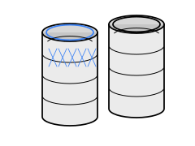
cylinder-linersmain-capscylinder-head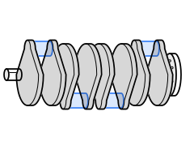
crankshaftmain-bearings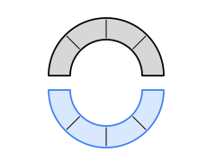
thrust-washers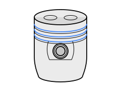
pistonspiston-ringspiston-pinsconnecting-rodsrod-bearingsrod-bushings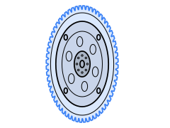
drive-plate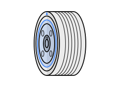
crank-pulley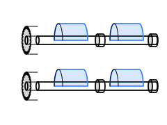
balance-shaftsvalvesvalve-springs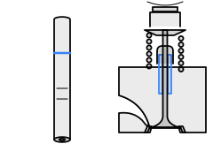
valve-guides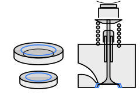
valve-seats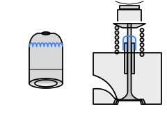
valve-stem-seals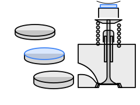
valve-shims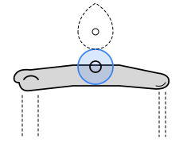
roller-followers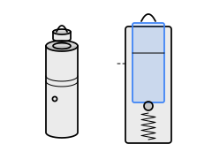
lash-adjusters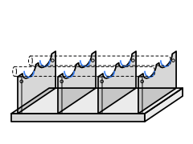
cam-carrier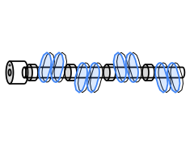
camshaft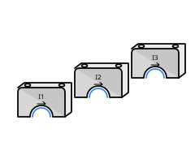
cam-capsrocker-cover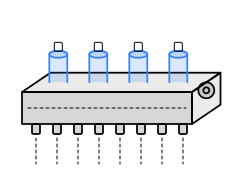
cvvl-actuator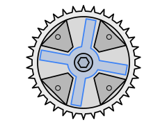
cam-phaser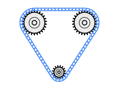
timing-chaintiming-sprocket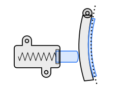
chain-tensioner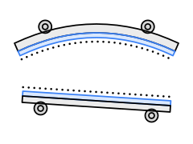
chain-guidestiming-coveroil-pan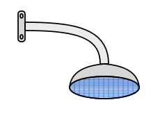
oil-pickupoil-pumpoil-filter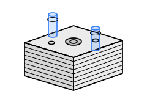
oil-cooleroil-baffleoil-separatorpiston-oil-jets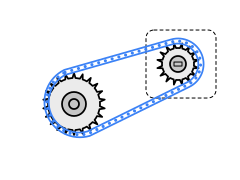
pump-drive-chainwater-pumpthermostatcoolant-pipes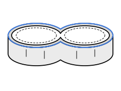
water-jacket-spacer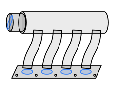
intake-manifold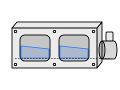
tumble-valve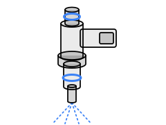
fuel-injector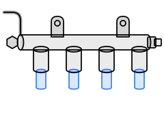
fuel-rail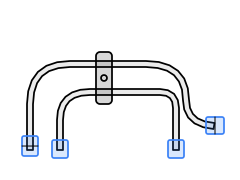
fuel-lineshigh-pressure-fuel-pump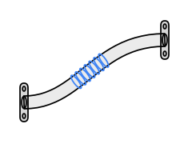
egr-pipe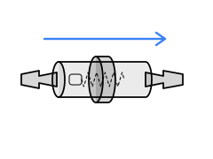
pcv-valveturbochargerturbo-oil-linesheat-shield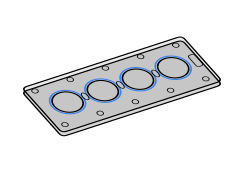
head-gasket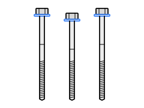
head-bolts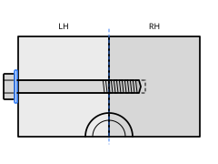
block-bolts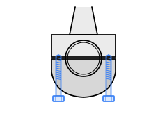
rod-boltscrank-seal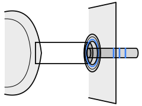
converter-seal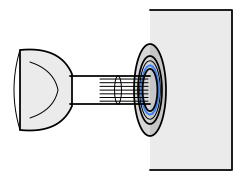
axle-seal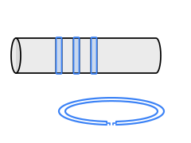
seal-rings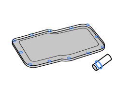
case-gasketsealing-plugs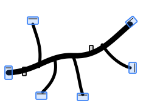
wiring-harness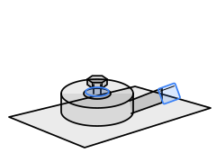
knock-sensorcrank-position-sensorcam-position-sensor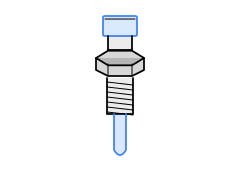
temperature-sensoroil-control-solenoid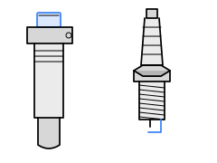
ignition-coilsalternatorspeed-sensor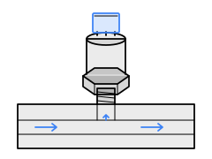
pressure-sensorrange-switchtcm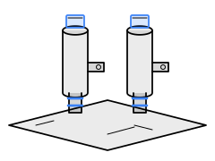
transmission-solenoidconverter-housingtransmission-caseextension-housing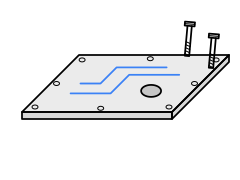
case-covervalve-body-covertransmission-pumpvalve-bodytransmission-filtertransmission-pan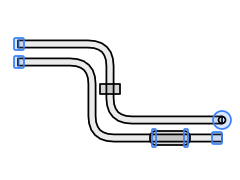
fluid-lines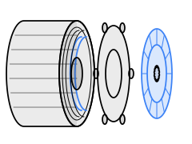
clutch-pack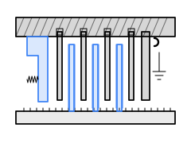
brake-packdog-clutchplanetary-gearsetinput-shafttransfer-gearoutput-gearselective-shimsrolling-bearingsmanual-shaftparking-lockvariator-pulleyvariator-chainvariator-chain-guidetorque-converterstator-supportdifferentialdrive-piniontransfer-clutchpower-transfer-unittransmission-assemblyengine-standengine-coverac-compressoraccessory-beltengine-mounts